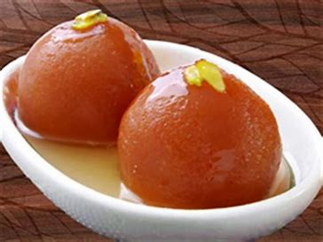
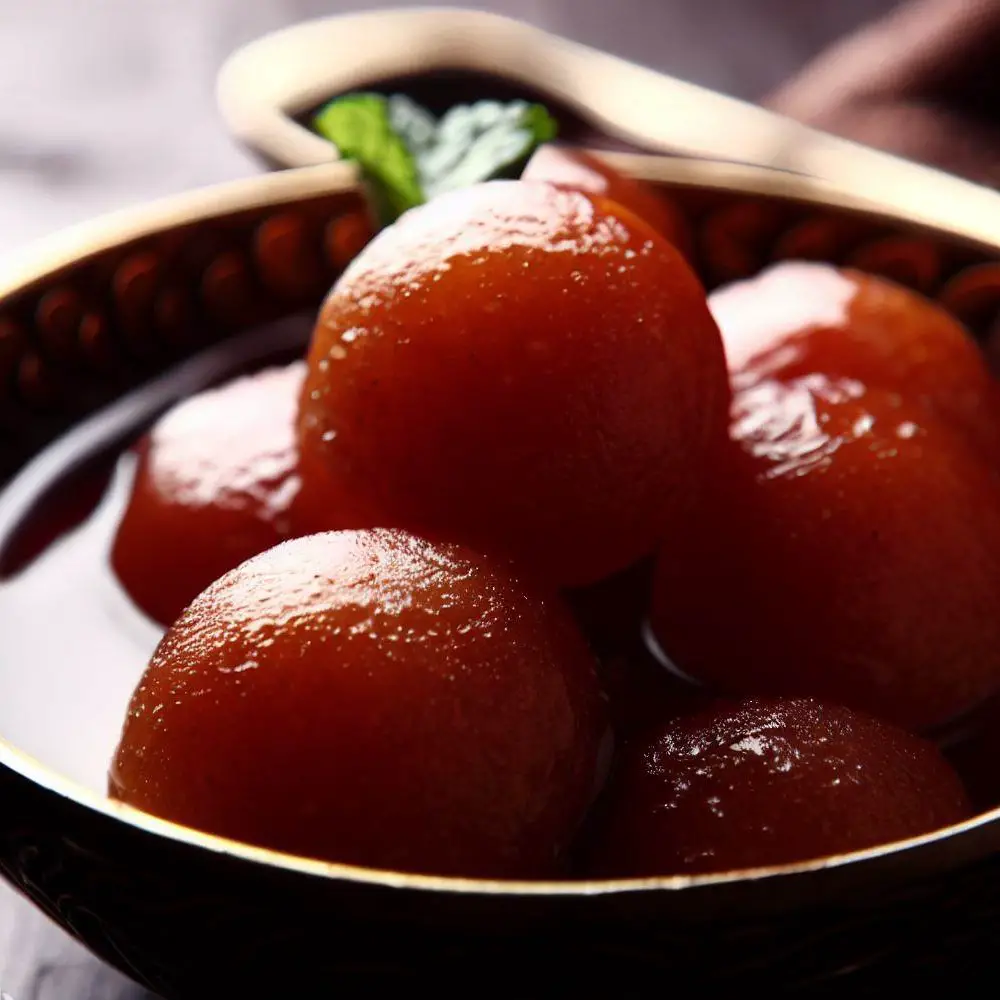

How To Make Perfect Gulab Jamun
A Step-by-Step Guide
Gulab Jamun is a traditional Indian sweet that is popular throughout the country and in many other parts of South Asia. It is generally made by kneading a mixture of milk powder, all-purpose flour and ghee into a dough, shaping the dough into small balls and deep-frying them till they turn golden brown. The fried balls are then soaked in sugar syrup flavored with cardamom, rose water, or saffron, giving them a sweet and savory flavor. Gulab jamun is often served on special occasions and festivals such as weddings and Diwali, and is enjoyed by people of all ages. Its popularity has made it a beloved dessert not only in India, but also in many other countries around the world.

The list of ingredients required to make Gulab Jamun is as follows:
- 1 cup milk powder
- 1/4 cup flour
- 1/4 tsp baking powder
- 1 tbsp ghee (clarified butter)
- 3-4 tbsp milk
- oil or ghee for frying
For Syrup
- 1 cup sugar
- 1 cup water
- 2-3 green cardamom pods, crushed
- Few drops of rose water or 1/4 teaspoon saffron strands (optional)
METHOD
- In a mixing bowl, mix milk powder, maida and baking powder. mix well.
- Add ghee to the mixture and using your fingers, rub into the dry ingredients until the mixture resembles breadcrumbs
- Add 3-4 tbsp of milk to the mixture and knead into a soft, smooth dough. The dough should not be too dry or too wet.
- Divide the dough into small equal sized balls and roll them between your palms until smooth.
- Heat oil or ghee in a deep frying pan on medium heat.
- As soon as the oil or ghee becomes hot, put the dough balls in the pan and fry them till they become golden. Keep stirring the balls from time to time so that they cook evenly.
- Remove the fried balls from the pan using a slotted spoon and place them on a paper towel to drain excess oil.
- To make the syrup, heat the sugar, water and ground cardamom pods in a saucepan over medium heat. Stir until the sugar dissolves completely.
- Let the syrup come to a boil and then lower the flame.
- Dip the fried balls in the syrup and let them soak for at least 30 minutes or till they absorb the syrup and become soft and spongy.
- Optionally, add a few drops of rose water or saffron to the syrup for extra flavor and aroma.
- Serve gulab jamuns warm or at room temperature, garnished with chopped pistachios or almonds, if desired.
- And there you have it – ready to enjoy delicious Gulab Jamun!

GulabJamunRecipe
Want to Subscribe